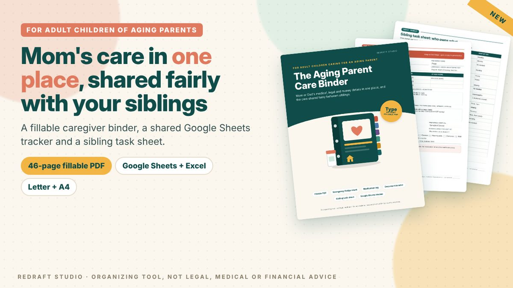
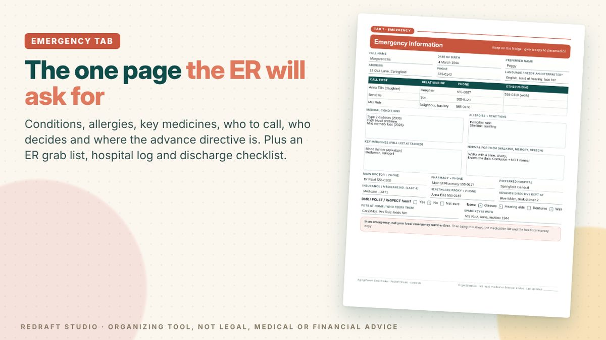
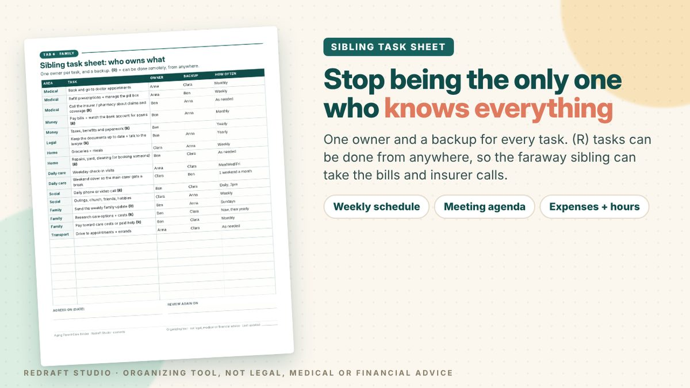
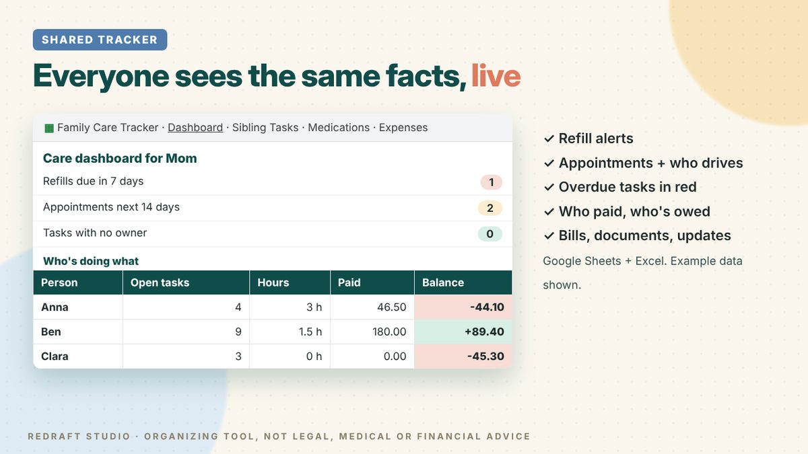
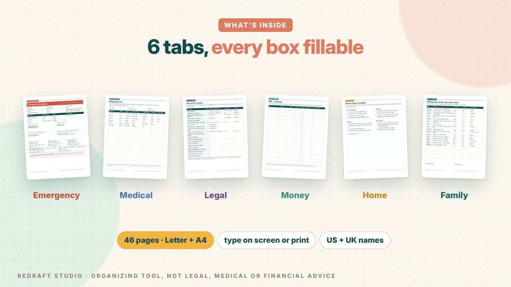
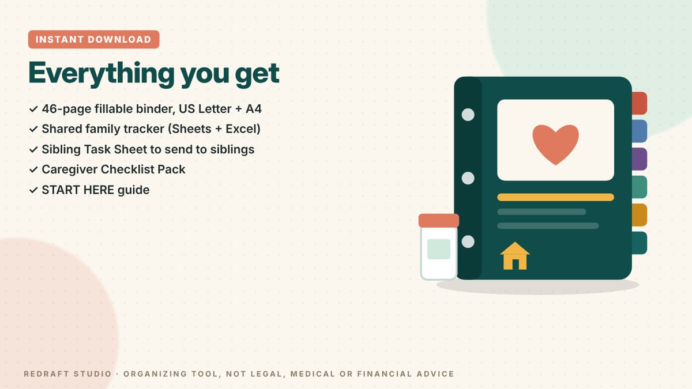

Aging Parent Care Binder
A fillable caregiver binder, sibling task sheet and family tracker for looking after a parent.
Instant download. Pay once, print as often as you like.

Mom or Dad's care in one place, and shared fairly with your siblings.
When a parent starts needing help, the information is everywhere: pill bottles on the counter, papers in four drawers, a doctor's number in one sibling's phone. And usually one sibling ends up knowing everything and doing everything. This binder fixes both: one fillable place for every medical, legal and money detail, and a simple way to split the work.
What makes it different
- Fillable, not just printable. Every box is a form field. Type on your computer, tablet or phone (Adobe Acrobat Reader, Apple Preview, Chrome or Edge), save, and update it whenever something changes. Or print it for a ring binder.
- A sibling task sheet that keeps it fair. 16 common caregiving tasks, each with an owner and a backup. Tasks marked (R) can be done from anywhere, so the sibling who lives far away can own the bills, the insurer calls and the research. It also comes as its own short PDF to send to your brothers and sisters.
- A shared family tracker. One Google Sheets file the whole family can open: medication refill alerts, appointments and who's taking Mom, overdue tasks, bills due, and an expense split that shows who paid what and who's owed. Works in Excel too.
- The 30-minute start. Most binders never get finished. Start with the 4 pages that matter in an emergency; everything else can wait.
- Emergency tab first. The emergency information sheet ER staff ask for, an ER grab-and-go list, what to say at triage, a hospital stay log and a discharge checklist.
- Private by design. Last 4 digits and "where it's kept", never full account numbers or passwords. A bank access worksheet covers the classic trap: security codes going to a phone nobody can reach.
- US and UK names. Power of attorney / LPA, Medicare / NHS number, POLST / ReSPECT, so it works wherever your family lives.
What's inside
46-page fillable binder (US Letter + A4)
- Start: the 30-minute start, first 10 steps when a parent needs help, review log
- Emergency: emergency information sheet (fridge sheet), ER grab-and-go + triage script, hospital stay log, discharge checklist
- Medical: health profile + daily routine, care team, medication list, daily medication log, medicine changes, doctor visit planner, appointment log, changes we've noticed
- Legal: document locator (21 key papers), key people, conversations to have, wishes
- Money: income + bank access worksheet, accounts, bills + autopay, insurance policies, monthly care budget, digital life
- Home: home info + services, home safety checklist, daily living check, comparing care options + tour questions
- Family: sibling task sheet (team + who owns what), weekly care schedule, family meeting agenda, shared expenses + hours log, family update log, caregiver check-in
Family Care Tracker (Google Sheets + Excel, 13 tabs): Dashboard, Setup, Sibling Tasks, Care Schedule, Medications (refill alerts), Appointments, Care Team, Shared Expenses, Hours Log, Bills, Documents, Family Updates.
Also included: the Sibling Task Sheet and the Caregiver Checklist Pack as separate fillable PDFs (Letter + A4), and a START HERE guide.
Good to know
- Instant digital download. Nothing is shipped.
- For your family's own use. Print or fill as many copies as you need.
- An organizing tool, not legal, medical or financial advice. It records where documents are kept; it doesn't replace a will, power of attorney or advance directive. Rules differ by country and state.
Made by Redraft Studio. Every product we make is a second, better draft of something people told us wasn't working.





Not sure yet? Start with the free kit.
Free Parent Emergency Info Kit: a few pages from the same system, free to download and print.
Download the free kit